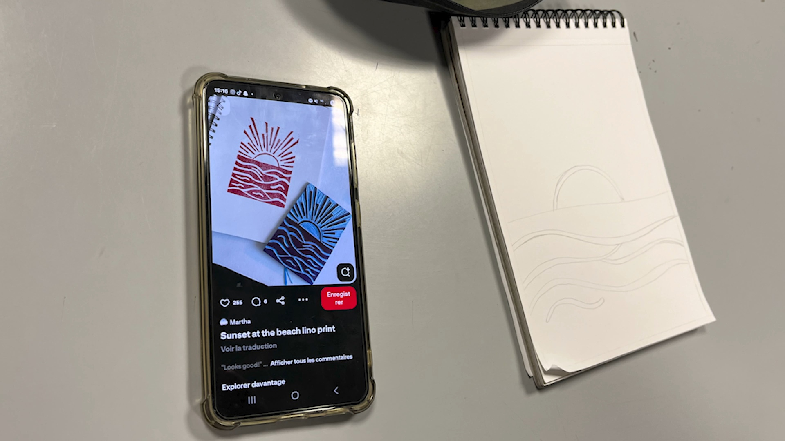
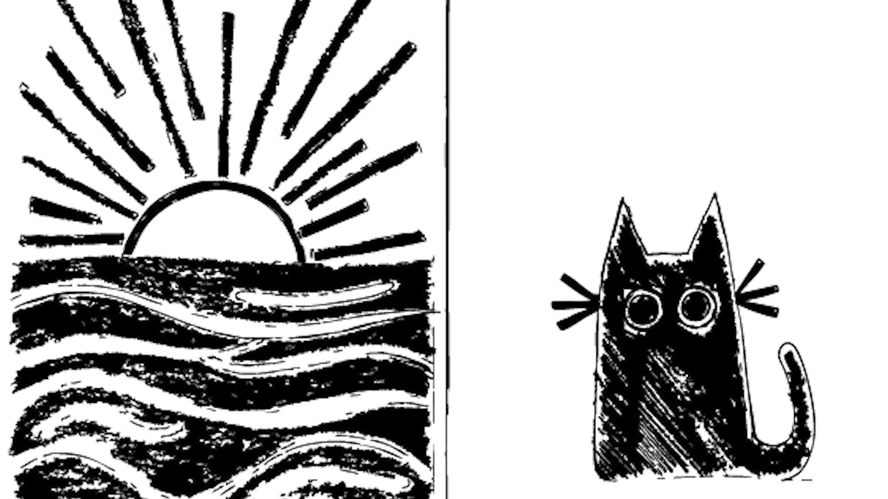
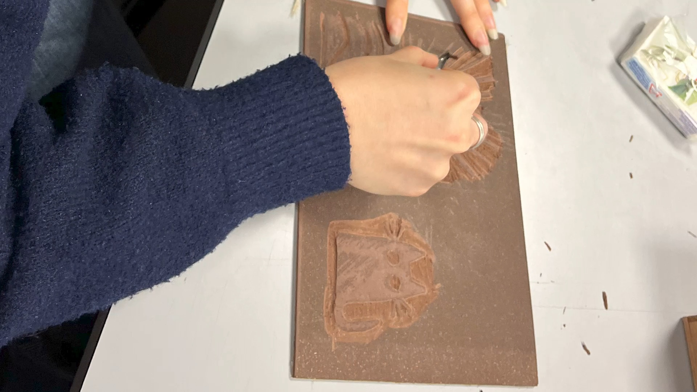
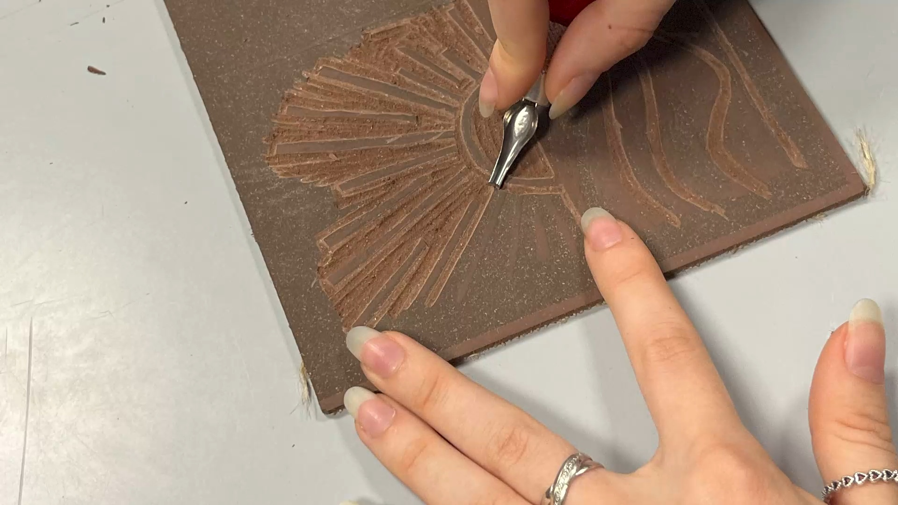
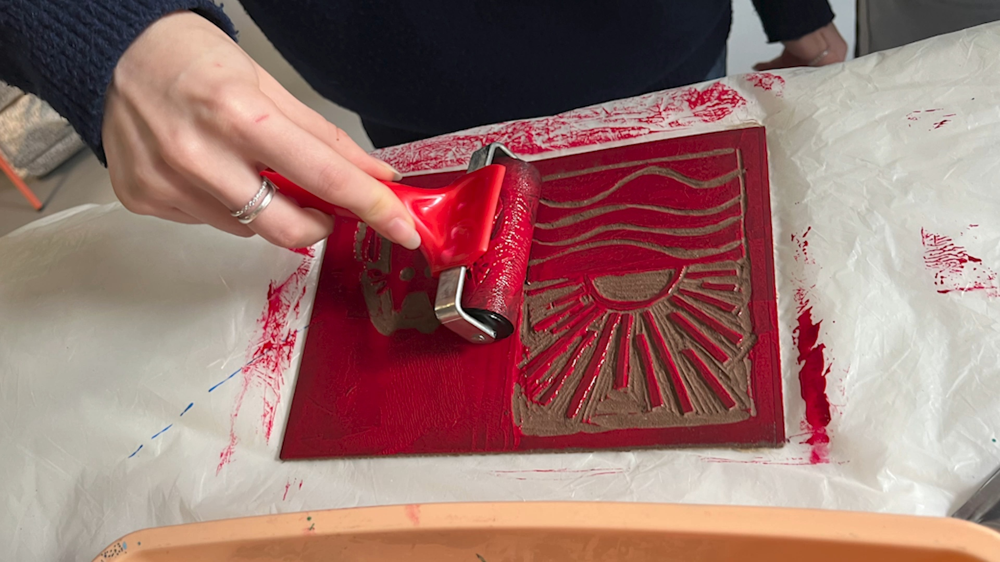
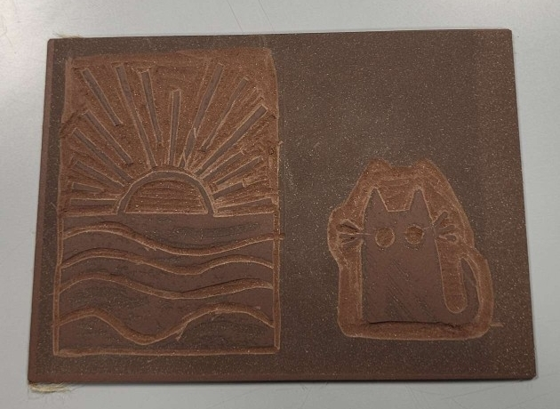

Le Brief
Initiation à la linogravure.
J’ai choisi de réaliser deux dessins : la mer et un chat. Pour cela, j'ai utilisé des plaques de linogravure et différentes gouges permettant de creuser et travailler les motifs.
Initiation à la linogravure.
J’ai choisi de réaliser deux dessins : la mer et un chat. Pour cela, j'ai utilisé des plaques de linogravure et différentes gouges permettant de creuser et travailler les motifs.
J’ai recherché des dessins adaptés à la linogravure, c’est-à-dire peu détaillés et composés de traits suffisamment épais. Après numérisation, ils ont été légèrement gravés sur la plaque à l’aide d’une imprimante 3D, ce qui m'a servi de guide pour savoir où creuser. Sur la plaque, il faut faire attention aux zones à retirer et à laisser en relief pour l’impression sur papier.


Après avoir récupéré la plaque pré-gravée, j’ai pu passer à la gravure en utilisant des gouges de différentes tailles selon l’épaisseur des traits.


Après la gravure, j’ai appliqué la peinture sur ma plaque afin de pouvoir l’imprimer sur une feuille.

